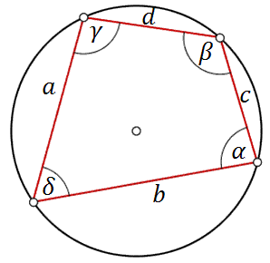

Czworokąt wpisany w okrąg
Narysujmy dowolny czworokąt wpisany w okąg i
wprowadźmy na nim następujące oznaczenia:  Czworokąt można wpisać w okrąg jeżeli zachodzi
warunek: \[\alpha +\gamma =\beta +\delta=180^\circ \] Pole czworokąta wpisanego w okrąg można obliczyć
ze wzoru: \[P=\sqrt{(p-a)(p-b)(p-c)(p-d)}\] gdzie \(p\) - to połowa obwodu czworokąta, czyli:
\(p=\frac{a+b+c+d}{2}\).
W tym filmiku omawiam własności czworokątów wpisanych w okrąg i opisanych na
okręgu.
Czas nagrania: 7 min.